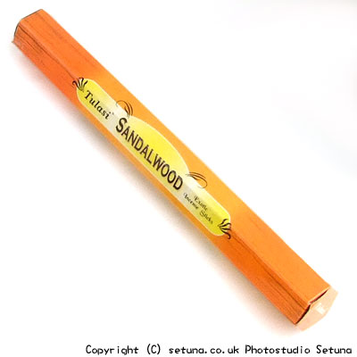

置いておくと花ベースの香水のような匂いがしますが近くで嗅ぐと、刺すような甘酸っぱい香りとサンダルが混ざったような感じですね。
火を点けると華やかで広がる感じがしますが程よく上品。
少し甘めのウッドベース調といったところでしょうか。
時には甘くたおやかに花のような香りが、時には強く木の香りがしながら続いてゆきます。
焚き終わった後はウッディ調の香りが細く長く残ります。
その後花のような香りに変わりかすかにそれが続いて、スーッと消えてゆき部屋の雰囲気が元に戻るといった感じです。
飽きのこない「花やかで程よく上品」ないいお香だと思います。
